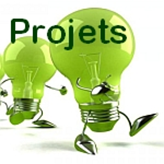

PROPOSITION DE TACHES
Répartition des tâches
Ces tâches ne vous sont données qu'à titre indicatif pour vous permettre d'évaluer le travail à réaliser.
Même si chaque binôme a une tâche particulière assignée, il demeure que la cohérence de l'ensemble sera bonifiée et vous permettra de mener à bien votre projet.
Tâche 1 : |
Détection mouvement + éveil du robot Étude, Conception et Réalisation de la partie détection de mouvement et réactions programmées - Appropriation du sujet, Identification du besoin, gestion du projet - Recherches solutions - Choix des composants électroniques, (expérimentations, essais, analyse des écarts) - Modélisation et schéma électrique - Choix stratégiques, Programmation. - Réaliser le prototype |
Tâche 2 : |
Détection mouvement + Rotation tête du robot Commande de la motorisation du système associée à une carte hacheur gérant le sens de rotation et la vitesse tout en sécurisant le déplacement. - Effectuer l'analyse des spécifications du CDCF associées à la reconnaissance de l'environnement d'évolution du robot - Lister et étudier les technologies de mesure des distances et/ou des zone de contraintes géographique - Effectuer le choix des composants - Effectuer un schéma de principe de fonctionnement - Réaliser la maquette numérique - Réaliser le prototype |
Tâche 3 : |
Conception design et Intégration des composants Étudier et concevoir les possibilités d'intégration de la carte de contrôleur - Effectuer l'analyse des spécifications du CDCF associées à l'intégration des parties commande - Lister et étudier les possibilités de fixation - Effectuer les choix de matériaux - Concevoir la maquette numérique - Réaliser le prototype |
Tâche 4 : |
Conception design et Intégration des composants Étudier et concevoir les possibilités d'intégration des capteurs de présence - Effectuer l'analyse des spécifications du CDCF associées à l'intégration des parties commande et opérative - Lister et étudier les possibilités de fixation - Effectuer les choix de matériaux - Concevoir la maquette numérique - Réaliser le prototype |
Créé avec HelpNDoc Personal Edition: Produire des livres EPub gratuitement